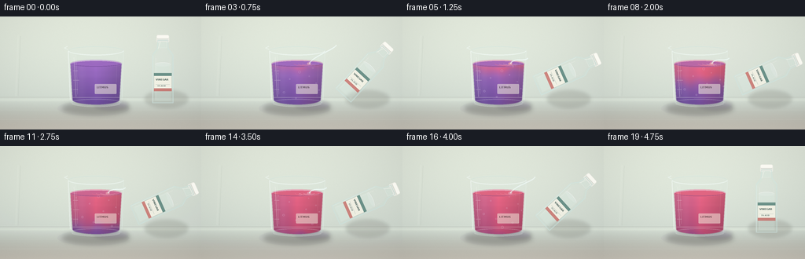
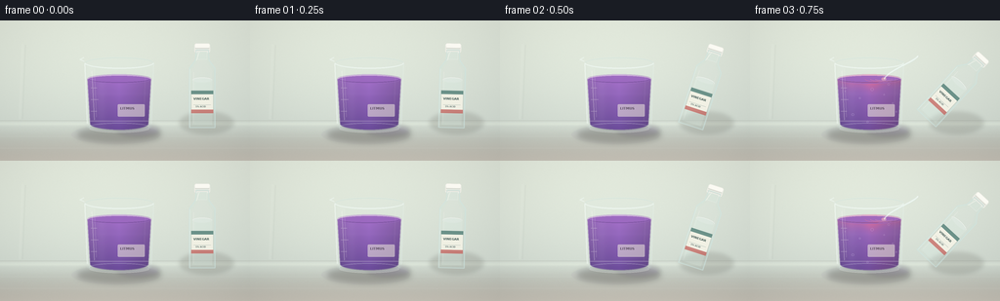

CODING AGENTS AS PIXEL WORLD MODELS
traex/DeepSeek-V4.1-Flash · phygen_146
点击播放 · 原生 RGB 像素
逐轮保存的候选
回放视频、检查图与代码变化。
每份候选均可单独播放。实际图片检查记录在下方工具轨迹中。
候选 01播放与检查图
点击播放 · 原生 RGB 像素

展开代码变化
--- 上一保存版本
+++ 本次保存版本
@@ -0,0 +1,419 @@
+from pathlib import Path
+
+import numpy as np
+from PIL import Image, ImageDraw, ImageFilter, ImageFont
+
+from artifact_io import save
+
+
+W, H = 256, 144
+FRAMES = 20
+SS = 4
+RNG = np.random.default_rng(146)
+CASE = Path(__file__).resolve().parent
+
+
+def smoothstep(x, edge0, edge1):
+ x = np.clip((x - edge0) / (edge1 - edge0), 0.0, 1.0)
+ return x * x * (3.0 - 2.0 * x)
+
+
+def mix(a, b, amount):
+ return a + (b - a) * amount
+
+
+def sc(value):
+ return int(round(value * SS))
+
+
+def points(values):
+ return [(sc(x), sc(y)) for x, y in values]
+
+
+def make_background():
+ hh, ww = H * SS, W * SS
+ y = np.linspace(0.0, 1.0, hh, dtype=np.float32)[:, None]
+ x = np.linspace(0.0, 1.0, ww, dtype=np.float32)[None, :]
+
+ top = np.array([225, 232, 220], dtype=np.float32)
+ middle = np.array([211, 220, 211], dtype=np.float32)
+ low = np.array([188, 196, 188], dtype=np.float32)
+ upper = mix(
+ np.broadcast_to(top, (hh, ww, 3)),
+ np.broadcast_to(middle, (hh, ww, 3)),
+ np.clip(y / 0.72, 0, 1)[..., None],
+ )
+ backdrop = mix(
+ upper,
+ np.broadcast_to(low, (hh, ww, 3)),
+ smoothstep(y, 0.72, 1.0)[..., None],
+ )
+
+ light = np.exp(-(((x - 0.34) / 0.55) ** 2 + ((y - 0.24) / 0.58) ** 2))
+ backdrop += light[..., None] * np.array([7, 7, 5], dtype=np.float32)
+
+ table_y = 104.0 / H
+ table_mix = smoothstep(y, table_y, 1.0)
+ table = mix(
+ np.broadcast_to(np.array([171, 171, 160], dtype=np.float32), (hh, ww, 3)),
+ np.broadcast_to(np.array([211, 207, 196], dtype=np.float32), (hh, ww, 3)),
+ np.clip((y - table_y) / (1.0 - table_y), 0, 1)[..., None],
+ )
+ backdrop = mix(backdrop, table, table_mix[..., None])
+
+ # A broad soft light and a shallow perspective band keep the bench readable.
+ band = np.exp(-((y - table_y - 0.016) / 0.012) ** 2)
+ backdrop += band[..., None] * np.array([10, 10, 8], dtype=np.float32)
+ backdrop -= (smoothstep(y, 0.87, 1.0) * 10.0)[..., None]
+
+ vignette = 1.0 - 0.08 * (((x - 0.5) / 0.72) ** 2 + ((y - 0.48) / 0.78) ** 2)
+ backdrop *= vignette[..., None]
+ grain = RNG.normal(0.0, 1.2, (hh, ww, 1)).astype(np.float32)
+ backdrop += grain
+ return Image.fromarray(np.clip(backdrop, 0, 255).astype(np.uint8), "RGB")
+
+
+def draw_soft_shadow(image, bbox, blur, color=(50, 49, 43, 76)):
+ layer = Image.new("RGBA", image.size, (0, 0, 0, 0))
+ draw = ImageDraw.Draw(layer)
+ draw.ellipse(tuple(sc(v) for v in bbox), fill=color)
+ layer = layer.filter(ImageFilter.GaussianBlur(blur * SS))
+ return Image.alpha_composite(image.convert("RGBA"), layer)
+
+
+def draw_background_details(image, frame):
+ layer = Image.new("RGBA", image.size, (0, 0, 0, 0))
+ draw = ImageDraw.Draw(layer, "RGBA")
+
+ # Faint out-of-focus bench seams and a reflected window edge.
+ draw.rectangle((0, sc(102.5), image.width, sc(103.2)), fill=(112, 113, 104, 30))
+ draw.line((sc(23), sc(24), sc(20), sc(101)), fill=(244, 247, 237, 22), width=sc(2.2))
+ draw.line((sc(26), sc(25), sc(23), sc(101)), fill=(92, 105, 93, 16), width=sc(0.8))
+ for y in (119, 131):
+ draw.line((sc(0), sc(y), sc(W), sc(y)), fill=(255, 255, 248, 13), width=sc(0.7))
+
+ # A very soft reflected glow under the glass.
+ draw.ellipse((sc(73), sc(107), sc(164), sc(127)), fill=(124, 104, 151, 12))
+ image = Image.alpha_composite(image.convert("RGBA"), layer)
+ return image
+
+
+def draw_liquid(image, frame):
+ hh, ww = image.height, image.width
+ t = frame / (FRAMES - 1)
+ pour = smoothstep(t, 0.10, 0.22) * (1.0 - smoothstep(t, 0.78, 0.91))
+ conversion = smoothstep(t, 0.13, 0.84)
+
+ mask = Image.new("L", image.size, 0)
+ md = ImageDraw.Draw(mask)
+ md.polygon(points([(89.4, 60.0), (154.6, 60.0), (151.8, 106.5), (92.2, 106.5)]), fill=255)
+ md.ellipse((sc(92.2), sc(100.0), sc(151.8), sc(112.0)), fill=255)
+ md.ellipse((sc(89.4), sc(55.6), sc(154.6), sc(64.4)), fill=255)
+ mask = mask.filter(ImageFilter.GaussianBlur(0.35 * SS))
+
+ yy = np.arange(hh, dtype=np.float32)[:, None] / SS
+ xx = np.arange(ww, dtype=np.float32)[None, :] / SS
+ surface = 60.0
+ depth = np.maximum(yy - surface, 0.0)
+ xnorm = np.clip((xx - 122.0) / 34.0, -1.0, 1.0)
+ vertical = np.clip((yy - surface) / 49.0, 0.0, 1.0)
+
+ purple_top = np.array([139, 84, 178], dtype=np.float32)
+ purple_bottom = np.array([86, 49, 133], dtype=np.float32)
+ red_top = np.array([218, 76, 109], dtype=np.float32)
+ red_bottom = np.array([171, 47, 88], dtype=np.float32)
+ purple = mix(purple_top[None, None, :], purple_bottom[None, None, :], vertical[..., None])
+ red = mix(red_top[None, None, :], red_bottom[None, None, :], vertical[..., None])
+
+ # The acid plume follows a moving, slightly curled front from the pour point.
+ center = 137.5 + 2.2 * np.sin(t * 7.1)
+ plume = np.exp(-((xx - center) / 18.0) ** 2)
+ wave = (
+ 2.8 * np.sin((xx - 116.0) / 8.4 + t * 4.8)
+ + 1.4 * np.sin((xx - 116.0) / 3.8 - t * 6.2)
+ + 1.2 * np.cos(depth / 7.0 + (xx - 120.0) / 17.0)
+ )
+ front = 3.0 + 54.0 * conversion
+ local = 1.0 / (1.0 + np.exp(-(front + wave - depth) / 4.2))
+ plume_mix = 0.17 * plume * (1.0 - np.exp(-depth / 17.0))
+ mixed = np.clip(local * (0.82 + 0.28 * plume) + plume_mix, 0.0, 1.0)
+ mixed *= smoothstep(t, 0.10, 0.18)
+
+ color = mix(purple, red, mixed[..., None])
+ cylindrical = 0.88 + 0.20 * (1.0 - np.abs(xnorm)) + 0.035 * (1.0 - xnorm)
+ color *= cylindrical[..., None]
+ color += (np.exp(-((xx - 103.0) / 6.0) ** 2) * 9.0)[..., None]
+ color += (np.exp(-((yy - 75.0) / 2.0) ** 2) * 2.0)[..., None]
+ color = np.clip(color, 0, 255)
+
+ arr = np.asarray(image.convert("RGB"), dtype=np.float32)
+ alpha = np.asarray(mask, dtype=np.float32)[..., None] / 255.0
+ arr = arr * (1.0 - 0.94 * alpha) + color * (0.94 * alpha)
+ image = Image.fromarray(np.clip(arr, 0, 255).astype(np.uint8), "RGB").convert("RGBA")
+
+ # Meniscus and colored surface are a separate ellipse, with a lighter rim.
+ surface_layer = Image.new("RGBA", image.size, (0, 0, 0, 0))
+ sd = ImageDraw.Draw(surface_layer, "RGBA")
+ surf_mix = float(np.clip(conversion * 1.04, 0, 1))
+ surf_color = tuple(int(v) for v in mix(np.array([150, 94, 188]), np.array([226, 89, 120]), surf_mix))
+ sd.ellipse((sc(89.4), sc(55.8), sc(154.6), sc(64.6)), fill=(*surf_color, 232))
+ sd.arc((sc(89.4), sc(55.8), sc(154.6), sc(64.6)), 184, 356, fill=(248, 225, 241, 150), width=sc(1.05))
+ sd.arc((sc(90.5), sc(56.8), sc(153.5), sc(63.8)), 4, 176, fill=(75, 41, 111, 105), width=sc(0.85))
+
+ if pour > 0.03:
+ impact = (137.0, 60.2)
+ for k in range(3):
+ phase = (t * 3.3 + k * 0.34) % 1.0
+ rx = 5.5 + phase * 16.0
+ ry = 1.1 + phase * 2.2
+ alpha_ring = int((1.0 - phase) * 125 * pour)
+ sd.arc(
+ (sc(impact[0] - rx), sc(impact[1] - ry), sc(impact[0] + rx), sc(impact[1] + ry)),
+ 0,
+ 180,
+ fill=(245, 241, 255, alpha_ring),
+ width=max(1, sc(0.55)),
+ )
+ sd.ellipse((sc(134.5), sc(58.2), sc(139.5), sc(61.8)), fill=(248, 247, 255, 78))
+
+ image = Image.alpha_composite(image, surface_layer)
+ return image, pour, conversion
+
+
+def draw_bubbles(image, frame, pour):
+ if pour < 0.02:
+ return image
+ t = frame / (FRAMES - 1)
+ layer = Image.new("RGBA", image.size, (0, 0, 0, 0))
+ draw = ImageDraw.Draw(layer, "RGBA")
+ fade = min(1.0, pour * 1.7) * (1.0 - smoothstep(t, 0.88, 0.98))
+ seeds = [
+ (104, 0.12, 1.3),
+ (113, 0.51, 0.9),
+ (126, 0.72, 1.6),
+ (132, 0.28, 0.8),
+ (141, 0.84, 1.1),
+ (147, 0.39, 0.75),
+ (98, 0.67, 0.65),
+ (119, 0.94, 1.0),
+ (137, 0.59, 0.7),
+ (151, 0.18, 0.8),
+ ]
+ for index, (x, phase, radius) in enumerate(seeds):
+ travel = (phase + t * (0.34 + index * 0.006)) % 1.0
+ y = 104.0 - travel * 43.0
+ x2 = x + 1.2 * np.sin(t * 12.0 + index * 1.7)
+ a = int((54 + 24 * (1.0 - travel)) * fade)
+ draw.ellipse(
+ (sc(x2 - radius), sc(y - radius), sc(x2 + radius), sc(y + radius)),
+ outline=(244, 232, 255, a),
+ width=max(1, sc(0.38)),
+ )
+ if index % 3 == 0:
+ draw.point((sc(x2 - radius * 0.25), sc(y - radius * 0.25)), fill=(255, 255, 255, min(255, a + 40)))
+ return Image.alpha_composite(image, layer)
+
+
+def draw_beaker(image):
+ glass = Image.new("RGBA", image.size, (0, 0, 0, 0))
+ draw = ImageDraw.Draw(glass, "RGBA")
+
+ # Back wall and base.
+ draw.polygon(points([(86.5, 42.0), (157.5, 42.0), (155.0, 107.0), (89.0, 107.0)]), fill=(217, 238, 236, 22))
+ draw.ellipse((sc(89.0), sc(103.0), sc(155.0), sc(115.0)), fill=(211, 236, 235, 25))
+ draw.ellipse((sc(91.0), sc(105.0), sc(153.0), sc(113.5)), outline=(235, 248, 246, 82), width=sc(0.8))
+
+ # Broad glass highlights and side walls.
+ draw.polygon(points([(89.2, 45.0), (95.8, 46.0), (98.4, 104.0), (91.4, 104.0)]), fill=(230, 247, 244, 28))
+ draw.line(points([(86.7, 44.0), (89.2, 105.5)]), fill=(245, 252, 248, 130), width=sc(1.15))
+ draw.line(points([(157.3, 44.0), (155.0, 106.0)]), fill=(232, 245, 240, 98), width=sc(0.8))
+ draw.line(points([(94.0, 52.0), (96.6, 102.0)]), fill=(251, 254, 249, 92), width=sc(0.75))
+ draw.line(points([(148.8, 51.0), (147.1, 103.0)]), fill=(255, 255, 250, 38), width=sc(0.55))
+
+ # Rim, lip, and small pouring spout.
+ draw.ellipse((sc(86.3), sc(37.0), sc(157.7), sc(49.5)), fill=(224, 241, 238, 22))
+ draw.arc((sc(86.3), sc(37.0), sc(157.7), sc(49.5)), 5, 174, fill=(242, 251, 247, 164), width=sc(1.35))
+ draw.arc((sc(87.2), sc(38.0), sc(156.8), sc(48.7)), 184, 355, fill=(203, 226, 222, 106), width=sc(0.85))
+ draw.line(points([(86.2, 42.0), (81.8, 40.0), (86.0, 37.8)]), fill=(241, 250, 246, 150), width=sc(1.0))
+
+ # Graduation marks.
+ for y, length in ((69, 6.0), (81, 7.5), (93, 6.0)):
+ draw.line(points([(93.0, y), (93.0 + length, y)]), fill=(248, 252, 244, 102), width=sc(0.55))
+ draw.line(points([(91.0, 103.0), (153.0, 103.0)]), fill=(246, 253, 248, 70), width=sc(0.8))
+
+ # Small label helps identify the beaker without distracting from the color change.
+ label = Image.new("RGBA", image.size, (0, 0, 0, 0))
+ ld = ImageDraw.Draw(label, "RGBA")
+ ld.rounded_rectangle(
+ (sc(120.5), sc(86.0), sc(148.0), sc(98.5)),
+ radius=sc(1.0),
+ fill=(245, 241, 224, 132),
+ outline=(255, 253, 242, 150),
+ width=max(1, sc(0.35)),
+ )
+ font = load_font(3.4)
+ ld.text((sc(123.0), sc(88.3)), "LITMUS", font=font, fill=(70, 67, 61, 176))
+ glass = Image.alpha_composite(glass, label)
+ return Image.alpha_composite(image, glass)
+
+
+def load_font(size):
+ candidates = [
+ "/usr/share/fonts/truetype/dejavu/DejaVuSans-Bold.ttf",
+ "/usr/share/fonts/truetype/liberation2/LiberationSans-Bold.ttf",
+ ]
+ for path in candidates:
+ if Path(path).exists():
+ return ImageFont.truetype(path, max(1, sc(size)))
+ return ImageFont.load_default()
+
+
+def bottle_geometry(frame):
+ t = frame / (FRAMES - 1)
+ tilt = smoothstep(t, 0.035, 0.24) * (1.0 - smoothstep(t, 0.79, 0.94))
+ angle = -66.0 * tilt
+ cx = 207.0 - 2.0 * tilt
+ cy = 73.0
+ theta = np.deg2rad(angle)
+ local_tip = np.array([0.0, -50.0])
+ mouth = (
+ cx + local_tip[0] * np.cos(theta) - local_tip[1] * np.sin(theta),
+ cy + local_tip[0] * np.sin(theta) + local_tip[1] * np.cos(theta),
+ )
+ return angle, (cx, cy), mouth
+
+
+def make_bottle(angle, center):
+ lw, lh = 100, 110
+ layer = Image.new("RGBA", (lw * SS, lh * SS), (0, 0, 0, 0))
+ draw = ImageDraw.Draw(layer, "RGBA")
+
+ body = [(37, 31), (43, 23), (44, 12), (56, 12), (57, 23), (63, 31), (63, 92), (37, 92)]
+ draw.polygon(points(body), fill=(211, 237, 233, 32))
+ draw.polygon(points([(39.5, 33), (45, 25), (45.8, 15), (54.2, 15), (55, 25), (60.5, 33), (60.5, 89), (39.5, 89)]), fill=(228, 247, 242, 22))
+
+ # Colorless liquid inside the clear bottle.
+ draw.polygon(points([(40, 43), (60, 43), (60, 89), (40, 89)]), fill=(221, 247, 240, 62))
+ draw.ellipse((sc(40), sc(40.5), sc(60), sc(45.5)), fill=(232, 250, 246, 82))
+ draw.arc((sc(40), sc(40.5), sc(60), sc(45.5)), 185, 355, fill=(255, 255, 255, 145), width=sc(0.55))
+
+ # Cap and neck bands.
+ draw.rounded_rectangle((sc(42.0), sc(5.5), sc(58.0), sc(15.0)), radius=sc(2.0), fill=(240, 239, 231, 235))
+ draw.rounded_rectangle((sc(42.7), sc(6.0), sc(57.3), sc(9.4)), radius=sc(1.0), fill=(253, 252, 245, 245))
+ for y in (10.6, 12.5):
+ draw.line(points([(42.8, y), (57.2, y)]), fill=(177, 181, 174, 105), width=sc(0.38))
+ draw.rectangle((sc(45.0), sc(13.8), sc(55.0), sc(22.0)), fill=(218, 242, 238, 48), outline=(239, 250, 246, 94), width=sc(0.45))
+
+ # Bottle edge light, highlights, and a simple label.
+ draw.line(points([(37.2, 32.0), (37.2, 91.0)]), fill=(255, 255, 249, 150), width=sc(0.85))
+ draw.line(points([(62.8, 32.0), (62.8, 91.0)]), fill=(191, 224, 221, 115), width=sc(0.7))
+ draw.line(points([(41.0, 35.0), (41.0, 87.0)]), fill=(255, 255, 251, 76), width=sc(0.6))
+ draw.line(points([(58.8, 35.0), (58.8, 87.0)]), fill=(255, 255, 250, 40), width=sc(0.42))
+ draw.line(points([(44, 23), (47, 14)]), fill=(251, 255, 250, 130), width=sc(0.65))
+
+ draw.rounded_rectangle(
+ (sc(38.8), sc(54.0), sc(61.2), sc(77.0)),
+ radius=sc(1.0),
+ fill=(247, 245, 232, 219),
+ outline=(94, 132, 127, 105),
+ width=max(1, sc(0.35)),
+ )
+ draw.rectangle((sc(38.8), sc(54.0), sc(61.2), sc(57.5)), fill=(77, 123, 116, 196))
+ draw.rectangle((sc(38.8), sc(73.5), sc(61.2), sc(77.0)), fill=(200, 87, 83, 170))
+ font = load_font(3.25)
+ draw.text((sc(41.0), sc(60.3)), "VINEGAR", font=font, fill=(53, 76, 70, 228))
+ draw.line(points([(41.0, 68.4), (58.8, 68.4)]), fill=(74, 111, 104, 95), width=sc(0.35))
+ draw.text((sc(43.2), sc(69.0)), "5% ACID", font=load_font(2.35), fill=(80, 101, 96, 185))
+
+ # The glass body is slightly translucent, so the table shows through the liquid.
+ outline = [(37, 31), (43, 23), (44, 12), (56, 12), (57, 23), (63, 31), (63, 92), (37, 92)]
+ draw.line(points(outline + [outline[0]]), fill=(207, 231, 227, 138), width=sc(0.9), joint="curve")
+
+ rotated = layer.rotate(angle, resample=Image.Resampling.BICUBIC, center=(50 * SS, 55 * SS))
+ return rotated, center
+
+
+def draw_stream(image, mouth, pour):
+ if pour < 0.025:
+ return image
+ layer = Image.new("RGBA", image.size, (0, 0, 0, 0))
+ draw = ImageDraw.Draw(layer, "RGBA")
+ start = np.array(mouth, dtype=np.float32)
+ end = np.array([137.3, 60.1], dtype=np.float32)
+ c1 = np.array([mouth[0] - 2.5, mouth[1] + 5.5], dtype=np.float32)
+ c2 = np.array([140.5, 51.5], dtype=np.float32)
+ u = np.linspace(0.0, 1.0, 30, dtype=np.float32)
+ curve = (
+ ((1 - u) ** 3)[:, None] * start
+ + (3 * (1 - u) ** 2 * u)[:, None] * c1
+ + (3 * (1 - u) * u**2)[:, None] * c2
+ + (u**3)[:, None] * end
+ )
+ path = [(sc(x), sc(y)) for x, y in curve]
+ width = max(1, sc(1.35 * (0.8 + 0.2 * pour)))
+ draw.line(path, fill=(215, 241, 240, int(74 + 70 * pour)), width=width + max(1, sc(0.6)), joint="curve")
+ draw.line(path, fill=(245, 254, 251, int(135 + 65 * pour)), width=width, joint="curve")
+ draw.line([(sc(x - 0.22), sc(y - 0.2)) for x, y in curve], fill=(255, 255, 255, 145), width=max(1, sc(0.35)), joint="curve")
+
+ for k in range(4):
+ phase = (k / 4.0 + (pour * 0.15)) % 1.0
+ idx = int(phase * (len(curve) - 1))
+ x, y = curve[idx]
+ radius = 0.45 + 0.25 * (k % 2)
+ draw.ellipse(
+ (sc(x - radius), sc(y - radius), sc(x + radius), sc(y + radius)),
+ fill=(252, 255, 252, 155),
+ )
+ return Image.alpha_composite(image, layer)
+
+
+def draw_foreground_finish(image, frame):
+ layer = Image.new("RGBA", image.size, (0, 0, 0, 0))
+ draw = ImageDraw.Draw(layer, "RGBA")
+ t = frame / (FRAMES - 1)
+ shimmer = 0.5 + 0.5 * np.sin(t * 7.0)
+ draw.line(points([(96.5, 49.0), (98.5, 99.0)]), fill=(255, 255, 250, int(42 + 10 * shimmer)), width=sc(0.45))
+ draw.arc((sc(90.0), sc(105.0), sc(154.0), sc(115.0)), 18, 162, fill=(255, 255, 248, 84), width=sc(0.7))
+ draw.line(points([(0, 103.2), (W, 103.2)]), fill=(245, 244, 234, 38), width=sc(0.55))
+ image = Image.alpha_composite(image, layer)
+ return image
+
+
+def render_frame(frame):
+ image = make_background()
+ image = draw_background_details(image, frame)
+
+ image = draw_soft_shadow(image, (79, 109, 165, 125), blur=3.0, color=(57, 55, 48, 72))
+ image = draw_soft_shadow(image, (184, 94, 239, 116), blur=2.2, color=(72, 69, 60, 43))
+ image = draw_soft_shadow(image, (119, 106, 164, 119), blur=2.0, color=(77, 48, 111, 38))
+
+ image, pour, conversion = draw_liquid(image, frame)
+ image = draw_bubbles(image, frame, pour)
+ image = draw_beaker(image)
+
+ angle, center, mouth = bottle_geometry(frame)
+ image = draw_stream(image, mouth, pour)
+ bottle, _ = make_bottle(angle, center)
+ bottle_dest = (sc(center[0] - 50.0), sc(center[1] - 55.0))
+ composed = image.copy()
+ composed.alpha_composite(bottle, dest=bottle_dest)
+ image = composed
+ image = draw_foreground_finish(image, frame)
+
+ image = image.convert("RGB").resize((W, H), Image.Resampling.LANCZOS)
+
+ # Gentle highlight variation mimics changing daylight during a timelapse.
+ arr = np.asarray(image, dtype=np.float32)
+ t = frame / (FRAMES - 1)
+ arr *= 0.995 + 0.006 * np.sin(t * np.pi * 2.0 + 0.4)
+ return np.clip(arr, 0, 255).astype(np.uint8)
+
+
+def main():
+ frames = np.stack([render_frame(i) for i in range(FRAMES)])
+ save(frames, CASE)
+ print(f"Saved {FRAMES} RGB frames to {CASE}")
+
+
+if __name__ == "__main__":
+ main()
候选 02播放与检查图
点击播放 · 原生 RGB 像素


展开代码变化
--- 上一保存版本
+++ 本次保存版本
@@ -70,7 +70,7 @@
backdrop *= vignette[..., None]
grain = RNG.normal(0.0, 1.2, (hh, ww, 1)).astype(np.float32)
backdrop += grain
- return Image.fromarray(np.clip(backdrop, 0, 255).astype(np.uint8), "RGB")
+ return Image.fromarray(np.clip(backdrop, 0, 255).astype(np.uint8))
def draw_soft_shadow(image, bbox, blur, color=(50, 49, 43, 76)):
@@ -149,7 +149,7 @@
arr = np.asarray(image.convert("RGB"), dtype=np.float32)
alpha = np.asarray(mask, dtype=np.float32)[..., None] / 255.0
arr = arr * (1.0 - 0.94 * alpha) + color * (0.94 * alpha)
- image = Image.fromarray(np.clip(arr, 0, 255).astype(np.uint8), "RGB").convert("RGBA")
+ image = Image.fromarray(np.clip(arr, 0, 255).astype(np.uint8)).convert("RGBA")
# Meniscus and colored surface are a separate ellipse, with a lighter rim.
surface_layer = Image.new("RGBA", image.size, (0, 0, 0, 0))
可观测工具轨迹
实际执行的命令与返回图片。
命令 1exit 0
/bin/bash -c "pwd && rg --files -g '"'!*.mp4'"' -g '"'!*.mov'"' -g '"'!*.png'"' -g '"'!*.jpg'"' | sort"
命令 2exit 0
/bin/bash -c 'cat prompt.txt'
命令 3exit 0
/bin/bash -c 'cat GENERATION_RULES.md'
命令 4exit 0
/bin/bash -c 'cat task_spec.json'
命令 5exit 0
/bin/bash -c "find . -maxdepth 2 -type f -printf '%p %s bytes\\n' | sort | head -200"
命令 6exit 0
/bin/bash -c "sed -n '1,240p' artifact_io.py"
命令 7exit 0
/bin/bash -c "sed -n '1,240p' player_template.html"
命令 8exit 0
/bin/bash -c "python - <<'PY'
import numpy, PIL
print('numpy', numpy.__version__)
print('PIL', PIL.__version__)
PY"命令 9exit 0
/bin/bash -c 'git status --short'
命令 10exit 1
/bin/bash -c 'python generate.py'
命令 11exit 1
/bin/bash -c 'python generate.py'
命令 12exit 1
/bin/bash -c 'python generate.py'
命令 13exit 0
/bin/bash -c 'python generate.py'
命令 14exit 0
/bin/bash -c "python - <<'PY'
from PIL import Image
im=Image.open('inspection.png')
print(im.size)
im.resize((im.width*2,im.height*2), Image.Resampling.NEAREST).save('.tmp/inspection2x.png')
PY"命令 15exit 0
/bin/bash -c "python - <<'PY'
from PIL import Image
import numpy as np
im=np.array(Image.open('inspection.png'))
print('shape',im.shape,'minmax',im.min(),im.max(),'std',im.std(axis=(0,1)))
for f in [0,4,8,12,16,19]:
a=np.array(Image.open(f'frames/{f:02d}.png'))
print(f, a.mean(axis=(0,1)).round(1), a.std().round(1))
PY"命令 16exit 0
/bin/bash -c "python - <<'PY'
from PIL import Image
import numpy as np
# contact-sheet-like enlargement of representative full frames
out=Image.new('RGB',(1024,288))
for i,f in enumerate([0,6,12,19]):
im=Image.open(f'frames/{f:02d}.png').resize((512,288),Image.Resampling.NEAREST)
out.paste(im,(i*256,0)) if False else None
# 4 frame horizontal strip at 2x, cropped no labels
out=Image.new('RGB',(512*2,288*2))
for i,f in enumerate([0,6,12,19]):
im=Image.open(f'frames/{f:02d}.png').resize((512,288),Image.Resampling.LANCZOS)
out.paste(im,((i%2)*512,(i//2)*288))
out.save('.tmp/fourframes.png')
PY"命令 17exit 0
/bin/bash -c "python - <<'PY'
from PIL import Image
im=Image.open('.tmp/fourframes.png')
print(im.getbbox(), im.getpixel((0,0)))
# produce contact sheet with only image frames and no metadata for easier local inspection
frames=[Image.open(f'frames/{i:02d}.png') for i in [0,6,12,19]]
out=Image.new('RGB',(512*2,288*2))
for i,im in enumerate(frames): out.paste(im.resize((512,288),Image.Resampling.LANCZOS),((i%2)*512,(i//2)*288))
out.save('.tmp/fourframes.png')
PY"命令 18exit 0
/bin/bash -c 'command -v chafa || true; command -v viu || true; command -v jp2 || true; command -v img2txt || true; command -v ffmpeg || true'
命令 19exit 0
/bin/bash -c "python - <<'PY'
from PIL import Image
import numpy as np
for i in [0,6,12,19]:
a=np.array(Image.open(f'frames/{i:02d}.png'))
# liquid interior sample bounds x95:148 y65:100
r=a[65:100,95:148]
print(i,'liq',r.mean((0,1)).round(1),'purpleish',((r[:,:,2].astype(int)-r[:,:,1])>15).mean().round(2),'redish',((r[:,:,0].astype(int)-r[:,:,2])>10).mean().round(2))
# changed pixels
PY"命令 20exit 0
/bin/bash -c "python - <<'PY'
from PIL import Image, ImageDraw
ims=[Image.open(f'frames/{i:02d}.png') for i in [0,3,6,9,12,15,18,19]]
out=Image.new('RGB',(256*4,144*2))
for j,im in enumerate(ims):out.paste(im,((j%4)*256,(j//4)*144))
out.resize((1024*2,288*2),Image.Resampling.NEAREST).save('.tmp/sequence_contact.png')
PY"命令 21exit 0
/bin/bash -c "python - <<'PY'
from PIL import Image
import numpy as np
for i in [0,3,6,9,12,15,18,19]:
a=np.array(Image.open(f'frames/{i:02d}.png'))
# detect bottle/body occupancy around right side via variance and mean, plus liquid sample
liq=a[65:100,95:148].mean((0,1))
bottle=a[20:90,165:245].mean((0,1))
print(f'{i:02d}', 'liq', liq.round(0).astype(int), 'bottle', bottle.round(0).astype(int))
PY"命令 22exit 0
/bin/bash -c "python - <<'PY'
from PIL import Image
import numpy as np
# report colored bounding regions and alpha-ish structure using saturation
for i in [0,6,12,19]:
a=np.array(Image.open(f'frames/{i:02d}.png')).astype(float)
mx=a.max(2); mn=a.min(2); sat=(mx-mn)/(mx+1)
ys,xs=np.where((sat>.18)&(a[:,:,2]>a[:,:,1]))
print(i, (xs.min(),ys.min(),xs.max(),ys.max()) if len(xs) else None, len(xs))
PY"命令 23exit 0
/bin/bash -c "python - <<'PY'
from PIL import Image
import numpy as np
for i in [0,3,6,9,12,15,18,19]:
a=np.array(Image.open(f'frames/{i:02d}.png'))
# count saturated/dark bottle pixels in right zone
r=a[15:105,155:252]
dark=(r.mean(2)<190)&(r.std(2)<25)
print(i,'dark neutral',dark.mean().round(3),'min',r.min(),'std',r.std().round(1))
PY"命令 24exit 0
/bin/bash -c "python - <<'PY'
from PIL import Image
im=Image.open('frames/00.png')
# crop the central/right scene and upscale for close inspection
im.crop((70,15,250,125)).resize((720,440),Image.Resampling.NEAREST).save('.tmp/scene_crop.png')
PY"命令 25exit 0
/bin/bash -c "python - <<'PY'
from PIL import Image
import numpy as np
im=np.array(Image.open('frames/00.png')).astype(float)
# colors of likely bottle body positions for calibration
for y,x in [(50,205),(70,205),(40,205),(70,220),(60,190),(70,180),(30,210),(60,170)]:
print((x,y),im[y,x].astype(int))
PY"命令 26exit 0
/bin/bash -c "python - <<'PY'
from PIL import Image
import numpy as np
im=np.array(Image.open('frames/00.png')).astype(float)
for y,x in [(50,205),(70,205),(40,205),(70,220),(60,190),(70,180),(30,210),(60,170)]:
print((x,y),im[y,x].astype(int))
print('beaker sample',im[80,110].astype(int),im[80,140].astype(int),im[60,120].astype(int))
PY"命令 27exit 0
/bin/bash -c "sed -n '180,430p' generate.py"
命令 28exit 0
/bin/bash -c "python - <<'PY' import generate from PIL import Image for i in [0,4,10,19]: angle,center,mouth=generate.bottle_geometry(i) bottle,_=generate.make_bottle(angle,center) # visible alpha bbox in local layer and global dest print(i, angle, center, mouth, 'bbox',bottle.getbbox(),'dest',(round(center[0]-50),round(center[1]-55))) PY"
命令 29exit 0
/bin/bash -c "python - <<'PY' import generate from PIL import Image for i in [0,4,10,19]: angle,center,mouth=generate.bottle_geometry(i) b,_=generate.make_bottle(angle,center) # alpha pixels where significant import numpy as np a=np.array(b)[:,:,3] ys,xs=np.where(a>35) print(i,'alpha>35', (xs.min(),ys.min(),xs.max(),ys.max()) if len(xs) else None, 'count',len(xs)) PY"
命令 30exit 0
/bin/bash -c "python - <<'PY' import generate from PIL import Image import numpy as np for i in [0,4,10,19]: a,c,m=generate.bottle_geometry(i); b,_=generate.make_bottle(a,c) alpha=np.array(b)[:,:,3] # sum alpha by row, convert to pixels s=(alpha.astype(float)/255).sum(1) for y in [22,30,40,50,100,200,300,330,369]: if y < len(s): print(i,y,round(s[y],1),end='; ') print() PY"
命令 31exit 0
/bin/bash -c "python - <<'PY' import generate import numpy as np for i in [0,4,10,19]: a,c,m=generate.bottle_geometry(i); b,_=generate.make_bottle(a,c) arr=np.array(b) alpha=arr[:,:,3] # RGB of nontransparent pixels, sample at y=200 local row=np.where(alpha[200]>100)[0] print(i,'mouth',tuple(round(v,1) for v in m),'row200 x', (row.min(),row.max()) if len(row) else None, 'colors', arr[200,row[len(row)//2],:3] if len(row) else None) PY"
命令 32exit 0
/bin/bash -c "python - <<'PY'
from PIL import Image
import numpy as np
im=np.array(Image.open('frames/00.png')).astype(int)
# print a coarse color grid by averaging blocks, for composition sanity
chars=' .:-=+*#%@'
for y in range(8,140,6):
line=''
for x in range(4,252,4):
b=im[y:y+6,x:x+4]
# dominant saturation/hue char
mx=b.max(); mn=b.min(); sat=(mx-mn)/(mx+1)
v=b.mean()/255
idx=int(np.clip(sat*1.8+v*.3,0,.999)*len(chars))
line+=chars[idx]
print(line)
PY"命令 33exit 0
/bin/bash -c "python - <<'PY'
from PIL import Image
import numpy as np
for f in [0,6,12,19]:
im=Image.open(f'frames/{f:02d}.png').convert('RGB')
# 64x36 luma + hue markers
a=np.asarray(im).astype(float)
# downsample blocks to 64x36
b=a.reshape(36,4,64,4,3).mean((1,3))
lum=b.mean(2)
chars=' .:-=+*#%@'
print('\\nFRAME',f)
for row in lum:
print(''.join(chars[min(9,int(v/256*10))] for v in row))
PY"命令 34exit 0
/bin/bash -c "python - <<'PY'
from pathlib import Path
import json, numpy as np
from PIL import Image
spec=json.loads(Path('task_spec.json').read_text())
files=sorted(Path('frames').glob('*.png'))
frames=[np.asarray(Image.open(p).convert('RGB')) for p in files]
print('frame_count',len(frames),'unique_shapes',sorted({a.shape for a in frames}))
print('dtype',frames[0].dtype,'spec',spec)
diffs=[np.abs(frames[i].astype(np.int16)-frames[i-1].astype(np.int16)).mean() for i in range(1,len(frames))]
print('mean_adjacent_abs_diff',round(float(np.mean(diffs)),3),'min',round(float(np.min(diffs)),3),'max',round(float(np.max(diffs)),3))
print('artifacts',[(p.name,p.stat().st_size) for p in [Path('pixels.npz'),Path('index.html'),Path('inspection.png'),Path('transition_check.png')]])
print('all_finite_rgb',all(np.isfinite(a).all() for a in frames))
PY"命令 35exit 0
/bin/bash -c "python - <<'PY'
from PIL import Image, ImageFilter
import numpy as np
chars=' .:-=+*#%@'
for f in [0,6,12,19]:
a=np.array(Image.open(f'frames/{f:02d}.png').convert('L'),dtype=float)
# sobel-ish gradient
gx=np.abs(np.diff(a,axis=1,prepend=a[:,:1])); gy=np.abs(np.diff(a,axis=0,prepend=a[:1,:])); g=np.maximum(gx,gy)
b=g.reshape(36,4,64,4).mean((1,3))
print('\\nFRAME',f,'edges')
for row in b:
print(''.join(chars[min(9,int(v/14))] for v in row))
PY"命令 36exit 0
/bin/bash -c "python - <<'PY'
from pathlib import Path
import re, base64, numpy as np
html=Path('index.html').read_text()
m=re.search(r\"const DATA=(\\{.*?\\}),W=\",html)
print('payload_found',bool(m),'html_bytes',len(html))
# validate embedded frame count without decoding all huge arrays
import json
if m:
d=json.loads(m.group(1))
print('meta', {k:d[k] for k in ('width','height','frames','fps','audio')})
print('delta_count',len(d['deltas']),'caption',d['caption'])
z=np.load('pixels.npz')
print('pixels',z['pixels'].shape,z['pixels'].dtype)
PY"命令 37exit 0
/bin/bash -c "python - <<'PY'
from PIL import Image
import numpy as np
frames=[np.array(Image.open(f'frames/{i:02d}.png')) for i in range(20)]
# Difference from initial, then bounding box of meaningful changes.
base=frames[0].astype(np.int16)
for i in [1,3,6,9,12,15,19]:
d=np.abs(frames[i].astype(np.int16)-base).max(2)
ys,xs=np.where(d>12)
print(i,'changed_px',len(xs),'bbox', (int(xs.min()),int(ys.min()),int(xs.max()),int(ys.max())) if len(xs) else None)
PY"命令 38exit 0
/bin/bash -c 'python generate.py'
命令 39exit 0
/bin/bash -c "python - <<'PY'
from pathlib import Path
import json
import numpy as np
from PIL import Image
spec=json.loads(Path('task_spec.json').read_text())
frames=np.stack([np.asarray(Image.open(p).convert('RGB')) for p in sorted(Path('frames').glob('*.png'))])
assert frames.shape == (spec['frames'],spec['height'],spec['width'],3)
assert frames.dtype == np.uint8
assert len(list(Path('frames').glob('*.png'))) == spec['frames']
z=np.load('pixels.npz')['pixels']
assert z.shape == (spec['height'],spec['width'],spec['frames'])
print('PASS', frames.shape, frames.dtype, 'fps',spec['fps'], 'adjacent mean diff', round(float(np.mean(np.abs(frames[1:].astype(np.int16)-frames[:-1].astype(np.int16)))),3))
print('sizes', {p.name:p.stat().st_size for p in [Path('pixels.npz'),Path('index.html'),Path('inspection.png'),Path('transition_check.png')]})
PY"命令 40exit 0
/bin/bash -c 'git status --short -- generate.py frames pixels.npz index.html inspection.png transition_check.png 2>/dev/null; find frames -maxdepth 1 -type f | wc -l'
保存候选 2 份；完成命令 40 次；可验证图片返回 0 张。原始 API 响应与完整日志保留在本地。